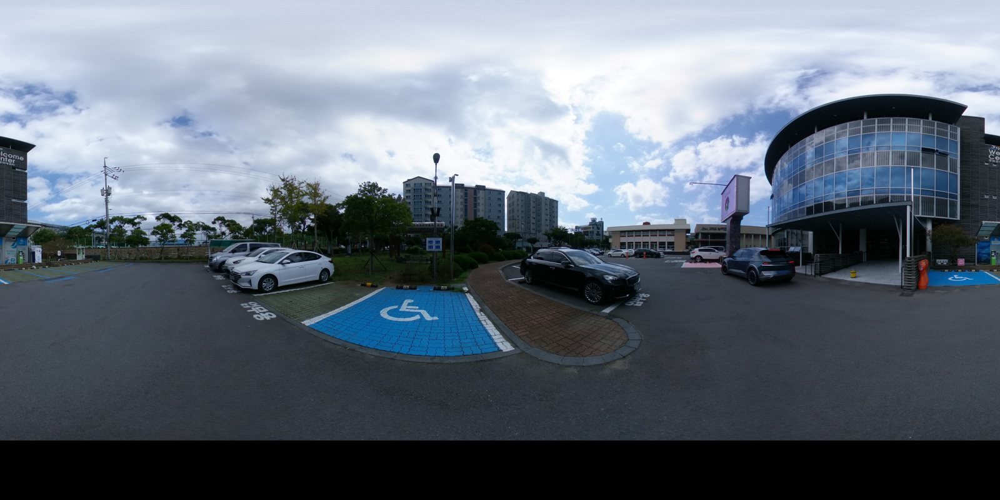

체력 저하와 긴 걷기 부담이 있어 실내, 문화, 휴식 중심으로 해석합니다.
회복 중
보호자 동반
휴식 필요
체력 저하와 긴 걷기 부담이 있어 실내, 문화, 휴식 중심으로 해석합니다.
장애인 화장실, 주차, 휴식 공간을 우선 점검합니다.
혼잡과 장시간 야외 체류는 감점합니다.
도보 부담이 낮고 실내 문화 코스로 적합합니다.
짧은 관람과 실내 체류 중심으로 조정하기 좋습니다.
날씨와 체류 시간을 확인하면 짧은 자연 코스로 활용 가능합니다.
추천은 점수 엔진이 먼저 계산하고, 마음동행 AI는 계산된 장소와 근거만 자연어로 설명합니다.

사용자는 조건을 고르고, 서비스는 장소 후보를 보드 위에서 정렬합니다. 추천 이유와 감점 이유는 별도 설명 문서가 아니라 같은 화면의 판단 근거로 붙습니다.
상황, 이동 부담, 음식 제한, 날씨 민감도, 필수 시설을 sticky note처럼 빠르게 조합합니다.
점수 높은 장소를 단순 나열하지 않고, 실제 이동 순서와 체류 부담을 같이 보여줍니다.
사진, 출처, 접근성 항목, 방문 전 확인을 하나의 장소 상세 패널에서 확인합니다.
다음 단계는 이 시안을 실제 `web/index.html` 구조로 옮기고, 추천 API 응답을 이 보드 레이아웃에 맞춰 재정렬하는 것입니다.